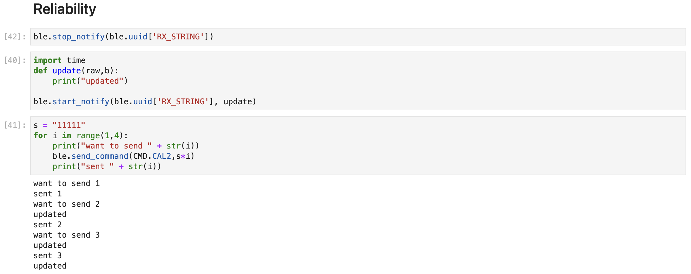

LAB 2 - Bluetooth Communication
Environment Configuration
Following the instruction, I installed venv, completed Virtual Environment Configuration, and installed Python Packages for Jupyterlab. Then I installed ArduinoBLE from the library manager in the Arduino IDE for the next bluetooth communication. Finally, I downloaded and unzip the codebase into the directory where Jupyterlab is installed and started the Jupyter server after activating the virtual environment for it.
BLE Connection
First get the MAC of Artemis Board from Serial Monitor after uploading 'ble_arduino.ino' to the board
Then modify the mac ID in 'connection.yaml' and connect PC and Artemis Board via code in Jupyterlab
ECHO
First complete the code for case ECHO in 'ble_arduino.ino'
Then send an ECHO command with a string value ("HiHello") from the computer to the Artemis board, and receive an augmented string on the computer via Jupyterlab
Send Three Floats
First complete the code for case SEND_THREE_FLOATS in 'ble_arduino.ino'
Then send an SEND_THREE_FLOATS command with 3 floats from the computer to the Artemis board via Jupyterlab, and extract the three float values in the Arduino sketch

Notify
First, define a function update for the ble.start_notify, making it print the float whenever it is updated. Then, setup a notification handler in Python using ble.start_notify and set the ble.uuid to be 'RX_FLOAT' to receive the float value (the BLEFloatCharactersitic in Arduino) from the Artemis board. In the callback function, store the float value into a (global) variable such that it is updated every time the characteristic value changes

Difference between Two Approaches
The data size for a float is 4 bytes, and the data size for a string differs from the chars it contains. And for a basic foat 0.0, the size of the string representing 0.0 is also 4 bytes (including the pause at the end of the string). So its definitely better to use the first method whose data size is constantly 4 bytes which contains full information of a float.
5960 Task
Effective Data Rate
In this task, I firstly setup a notification handler in Python using ble.start_notify and define a update function to calculate the communication time between the computer and Artemis Board and print it.
In the testing Python code, I set a default string 'aaaaa' and made a for loop to gradually increase the size of data sent to the Artemis Board using 'ble.send_command'.
In the for loop, the data size increase 5 bytes once. It will initialize T and store the time to t0 once after a command is sent. For the notification handler, I defined a function 'update' which will store the time to t1
and add (t0-t1) to T when it
received the updated string. For each string sent to the Artemis Board, I also made a for loop to send for 1000 times and then get the average time (T/1000) of the communication between the computer and the Artemis Board.
I also added a case 'CAL1' in ble_arduino.ino which only stores the string received from computer into c_str.
Below is the dataset:
Then draw the graph using the dataset:
From the graph, we can see the communication time increases linearly as the data size increases linearly. So the data rate is about 32.05 bytes/ms (Except for basic communication time which is about 15.67ms)
Reliability
In this task, I firstly tried to increase the changing frequency of 'RX_FLOAT' by modifying the interval to be smaller (from 500 to 0.01), and monitor the value received by the computer by setting up a notification handler using ble.start_notify. But I found there will be no data missing.
Then I tried to make the Artemis Board run slower than the interval between two commands sent to it to see how it handles high frequency commands.
In ble_arduino.ino, I added another case 'CAL2' which will repeat clear and store the string received from computer to c.str for 1000000 times which takes few seconds.
In the testing Python code, I set notifications before and after sending a command to the Artemis Board to see if a command is successfully sent to it. Then I
setup a notification handler using ble.start_notify to see if the setup a Artemis Board finishes its task.
From the result we can know that
when a command is sent and computer wanted to send another command, it needed to wait until the Artemis Board finished its task.
This may be because there is a feedback signal to tell the computer whether the Artemis Board has completed the work in the bluetooth communication protocol, which
prevent computer to send a new command to the Artemis Board until it received such feedback signal. And vice versa.
So there will be no data missing between the bluetooth communication of computer and robot thanks to the protocol.